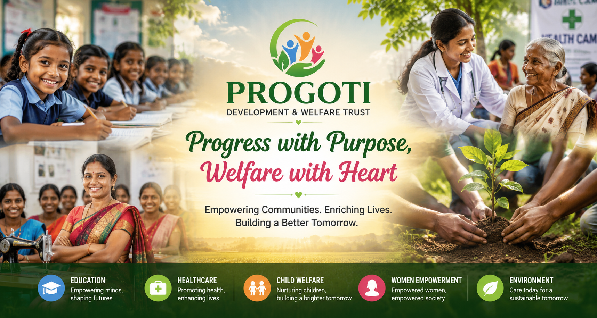
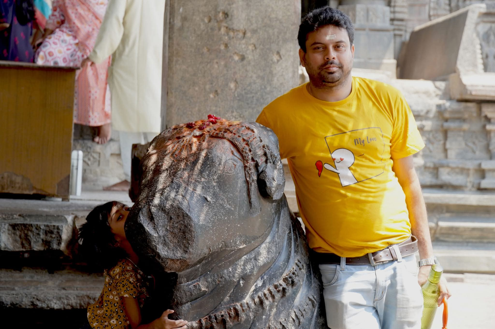

Koushik Datta
Trustee
Koushik Datta brings 20 years of experience as a Chartered Accountant, supporting governance, financial oversight, and transparent institutional growth.
Community-first social impact
Progoti Development & welfare trust partners with communities to co-create practical solutions that are dignified, inclusive, and scalable.

About
To nurture equitable communities where every child learns, every family has healthcare access, and every young person can build a dignified livelihood.
Our approach blends direct action, grassroots partnerships, and digital enablement to create long-term social outcomes.
Trustees
A committed board with diverse experience in social development, governance, education, and public service.
Trustee
Koushik Datta brings 20 years of experience as a Chartered Accountant, supporting governance, financial oversight, and transparent institutional growth.

Trustee
Soumen Chakraborty brings 19 years of experience in Information Technology, supporting digital systems, strategic planning, and operational efficiency for the trust.

Trustee
Brief background about Trustee Name 3. Add profile details, expertise, and contribution to the trust.
Programs
Progoti Development & welfare trust focuses on dignified, inclusive, and sustainable action across ten key areas.
Empowering marginalised rural communities with innovative and sustainable livelihood solutions.
LEARN MOREScreening camps, maternal health awareness, nutrition outreach and community health education.
LEARN MORELearning support, scholarships, digital labs, and youth skill development pathways.
LEARN MORESelf-help group strengthening, entrepreneurship support, and market linkages for women.
LEARN MOREBuilding safer, disaster-resilient communities through preparedness and rapid response.
LEARN MORECultivating lifelong learning, character and leadership skills among youth through sport.
LEARN MOREProtecting and promoting local arts, cultural traditions, and community heritage.
LEARN MOREWater stewardship, local adaptation planning, greener practices and community sustainability.
LEARN MOREEnriching public spaces to improve quality of life and infrastructure in urban areas.
LEARN MOREEngaging committed volunteers to co-create lasting social change alongside communities.
LEARN MOREImpact
Lives supported
Villages and wards reached
Community volunteers trained
Insights
Featured Publication
A concise snapshot of milestones, lessons, and next-year priorities.
Learn moreField Story
How mentoring and local role models improved retention and confidence.
Learn moreKnowledge Note
Practical frameworks for prevention-first public health at local level.
Learn moreCareers
We are looking for field coordinators, program associates, and communication professionals committed to inclusive development.
Apply NowMedia
Find press notes, photo essays, and community stories from our field teams across districts.
Contact
Email: trustprogoti@gmail.com
Phone: +91 7416099516
NGO Darpan ID: WB/2026/1097613
PAN: AAGTP5847G
Address: Progoti Bhavan, Community Road, West Bengal, India